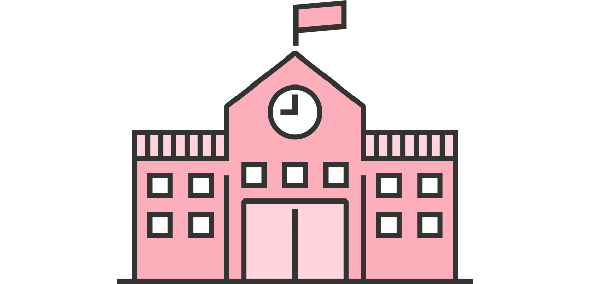

서울특별시교육청 학교 성폭력 온라인 신고센터
신고하기
가상신고
대응가이드
1 상황 인식하기
2 도움받을 곳 찾기
3 해결 방법 선택하기
4 신고하고 처리하기
5 다시 일상으로
3 해결 방법 선택하기
해결 방법 생각하기
신고기관 찾기
학교·교육청에 신고하면?

신고 방법
전화·대면
학교 성고충 상담실(방문, 전화, 이메일 등)
교육청 성폭력 전담관(02-3999-699)
이메일
교육감 직속 핫라인 이메일
helpschool@sen.go.kr
홈페이지(익명 신고)
서울시교육청 홈페이지 온라인 신고센터
sen.go.kr/schoolwithyou
(성폭력 사안 처리 매뉴얼 탑재)
교육청 처리
• 학교에 직접 신고하기 두렵거나 교육청의 접수를 원하는 경우 교육청으로 직접 신고하실 수 있습니다.
• 가해자가 교직원인 경우 서울시교육청에서 성폭력 전문가가 직접 조사하며, 가해자가 학생·일반인인 경우에는 소속 학교나 수사기관에서 조사합니다.
가해자와 공간 분리
성폭력 사건 처리가 완료될 때까지 가해자와 공간 분리가 가능합니다.(긴급조치)
가해자가 학생인 경우
• 피해자 및 신고·고발자에 대한 접촉, 협박 및 보복행위 금지, 출석정지
가해자가 교직원인 경우
• 성폭력 인지 즉시 분리 조치: 담임 해제, 수업배제 등
• 성범죄로 수사, 조사 통보 시 직위해제
피해학생 보호 조치
성폭력 사건 처리가 완료될 때까지 피해자를 보호합니다.(긴급조치)
일시보호
가해자로부터 지속적인 폭력이나 보복을 당할 우려가 있는 경우, 일시적으로 보호시설, 집, 학교 상담실 등에서 보호를 받을 수 있습니다.
치료 및 치료를 위한 요양
성폭력으로 인하여 생긴 신체·정신적 상처를 치료하기 위해 의료기관에서 치료를 받을 수 있습니다.
다음
처음으로